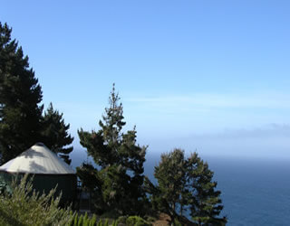

The Yurts at Pacific Trails Resort
- What is a yurt?
-
Our luxury yurts are permanent structures four feet off the ground. Each yurt has canvas walls, wooden floor, and a roof dome that can be opened.
- How are the yurts furnished?
-
Each yurt is furnished with a queen-sized bed with down quilt and a gas-fired stove. The luxury camping experience also included electricity and a sing with hot and cold running water. Shower and restroom facilities are located in the lodge.
- What should I bring?
-
Bring a sense of adventure and some time to relax! Most guest also pack comfortable walking shoes and plan to dress for changing weather with layers of clothing.
- Want to learn more about yurts?
-
Yurtstory: The history of yurts ancient and modern.
YurtFAQs: for those who want to learn more.
Yurts Packages
A variety of luxury yurt packages are available. Choose a package from the table below and contact us to begin your reservations. We're happy to build a custom package just for you.
| Package name | Description | Nights | Cost per Person |
|---|---|---|---|
| Weekend Escape | Two breakfasts, a trail map, a picnic snack. | 2 | $450 |
| Zen Retreat | Four breakfasts, a trail map, a pass for daily yoga. | 4 | $600 |
| Kayak Away | Two breakfasts, two hours of kayak rental daily, a trail map. | 2 | $500 |
| Reserve today for the best availability! | |||